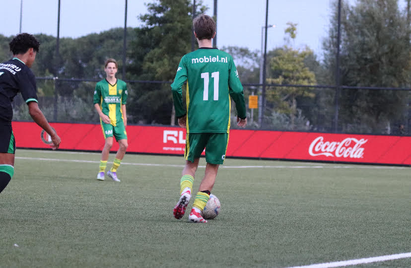
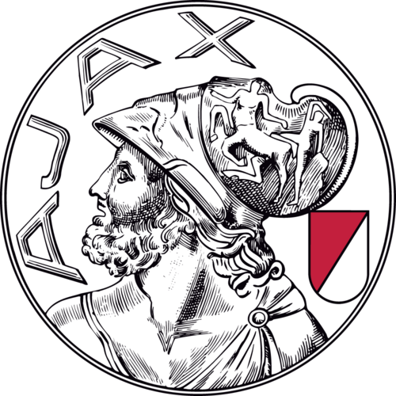
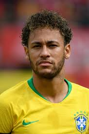

Hallo, mijn naam is Derek, ik ben 15 jaar oud en zit op voetbal.
Ik zit op de voetbalclub Voorschoten'97.Ook kijk ik graag voetbal mijn favourite voetbalclub is Ajax
en mijn favoriete voetballer is Neymar🇧🇷⚽.
Mijn gezin bestaat op mijn vader.moeder en broer. We hebben het altijd gezellig samen
en gaan vaak op vakantie met z'n allen.

Klik hier voor pagina 2!